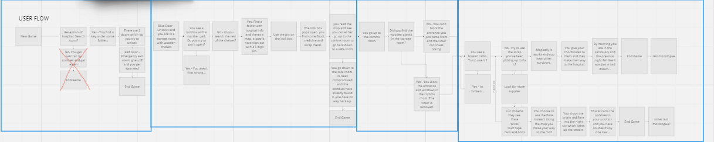
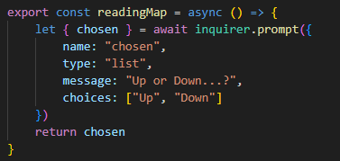
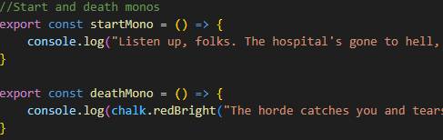
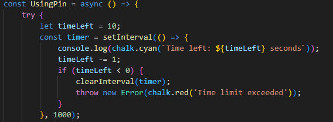

Monday:Inqueries + Project planning, Tuesday: MongoDB + NoSQL, Wednesday: Project Thursday: MongoDB Atlas Friday: Project + lightning talks
This week we were given a big project in the frontend side. We had to build a text-based
escape room collabrotaively within groups using inqueriers to get user inputs, functions and classes
and subclasses. Firstly, we thought of an idea and created a user flow chart to map it out.

We then started the development process. Splitting the work between the group evenly so we
could all take part in each section. Firstly building the Inqueries and monologues for each room then adding
a timer, a game loop, promises and ifelse statements.
We also added different variables and created functions e.g. playAgain so whenevr the
player chose the wrong option and died they would get the option to play again.
We created them all in different files and used import to bring all the information back to
one script.js file.
 
Moving onto the backend side we downloaded mongoDB and used different queries to make a table and include values. We then pasted a cars.json file into mondoDB to practise our queries such as .find and used opertors such as $gte and much more. MongoDB Atlas was our next download and we were taught how to navigate through the website, considering it was quite similiar to mongoDB we then created our own vehicles file with a bikes collection and made our own .json file to include. We added data, retrieved specific data and changed data.